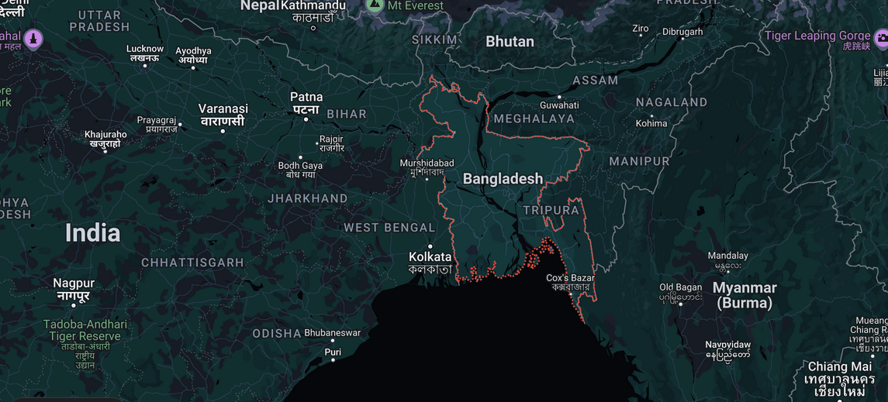
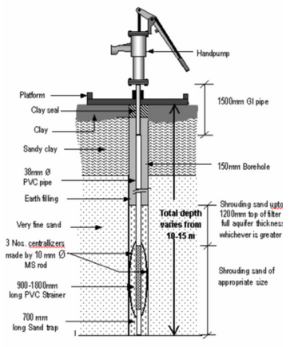
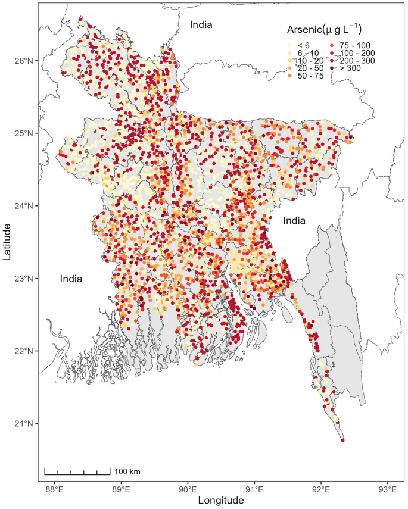

5.1 Evaluation of Cultural Considerations#
Course Website
Readings/References#
Schumacher, E. F. (1973) Small Is Beautiful: Economics as if People Mattered - internet sourced looks like original content. Actual from Amazon is ~12 USD
Time Magazine (2010) Study Says Arsenic Poisons Millions in Bangladesh—But They’re Not the Only Ones
Arsenic Treatment Technology Design Manual for Small Systems
Videos#
How to Build an Engineering Culture That Focuses on Business Impact
The Culture Factor in International Development and its implications for Global Business
Appropriate structural engineering in humanitarian and international development contexts
A clean water solution for Bangladesh’s arsenic poisoning crisis - BBC News
Why Cultural Considerations Matter in Engineering#
Engineering is often perceived as a purely technical field, driven by mathematical models, physical principles, and material constraints. However, cultural considerations play a critical role in the design, implementation, and long-term sustainability of engineering solutions. The success of an engineering project does not depend solely on its structural integrity or efficiency but also on its alignment with the cultural, social, and historical context of the communities it serves. Ignoring cultural factors can lead to inefficiencies, rejection of infrastructure by local populations, and even outright failure.
One of the fundamental reasons cultural considerations matter is that engineering projects interact directly with people’s lifestyles, traditions, and values. Infrastructure, for instance, must be designed with an understanding of how communities use space, interact with their environment, and perceive technological interventions. A bridge, road, or building must do more than stand—it must integrate seamlessly into the social fabric and serve the people effectively.
What is Culture in an Engineering Context?#
Culture, in a simple sense, can be understood as “how we do things.” It encompasses the shared practices, values, beliefs, and norms that define a community’s way of life. In engineering, culture influences how projects are conceptualized, designed, and implemented. It dictates the materials people prefer, the spatial arrangements they find functional, and the technologies they readily adopt. Engineers must recognize that culture shapes public perception, usability, and the sustainability of infrastructure.
For instance, the use of locally available materials and traditional construction methods is not merely an aesthetic choice but a cultural and functional one. Similarly, cultural attitudes toward public spaces influence how transportation networks are designed. Understanding these cultural dimensions ensures that engineering solutions are not just technically sound but also widely accepted and effectively utilized.
Simple considerations in engineering would be emphasizing the importance of selecting appropriate technology that fits the cultural and economic context of a society (e.g. Schumacher, 1973), and careful design of systems to leverage human behavior and enhance usability (Norman, 1988). This means ensuring that engineering solutions are not only functional but also intuitive, accessible, and relevant to the community they serve. For example, designing water purification systems that align with local water retrieval habits, or transportation systems that accommodate prevalent commuting patterns, ensures broader adoption and long-term effectiveness.
Review: Small Is Beautiful: Economics as if People Mattered
E.F. Schumacher’s Small Is Beautiful remains a compelling critique of modern economic structures, questioning their sustainability and impact on human well-being. Written in 1973, the book explores the consequences of large-scale industrialization, arguing that it depletes natural resources and dehumanizes labor. Schumacher highlights how organizations treat workers as cogs in a machine, stripping work of its intrinsic satisfaction in the pursuit of profit.
A core theme of the book is enoughness—a principle that advocates for a balanced approach to consumption, economic growth, and environmental stewardship. Rooted in Schumacher’s concept of Buddhist economics, this philosophy emphasizes harmony between human needs and ecological limits. While compelling, this perspective may oversimplify the complexities of global economic interdependence, particularly in developing regions. Schumacher’s skepticism about technology transfers contrasts with the argument that such transfers could accelerate sustainable development.
Chapter 16, a standout discussion on capitalism, critiques large-scale organizations for stifling creativity and autonomy. Schumacher notes that hierarchical structures feel restrictive, as decisions filter through multiple layers of authority. He also explores The Motivation Principle, which suggests that people act based on their intrinsic reasons. While managers enjoy strategic freedom, employees often face rigid constraints—an irony Schumacher keenly observes.
Though some of Schumacher’s views may seem idealistic in today’s globalized economy, Small Is Beautiful remains an insightful exploration of economic sustainability, human-centered development, and the role of technology. Its arguments continue to challenge how we shape economic policies and organizational structures.
Interested? Click the link in the references to explore the book and form your own opinion. You may never look at a technocrat the same way again!
Sadly, there is no equation, spreadsheet, program, or AI response that boils down these considerations to the point of populating a data field and pressing the green “design button.” Engineering is not a rigid, one-size-fits-all discipline, and cultural factors introduce variables that cannot always be quantified. This reinforces the importance of cultural considerations in engineering and design, requiring engineers to engage with communities, conduct field studies, and apply a human-centered approach to problem-solving. Cultural competence is an essential skill, enabling engineers to translate technical knowledge into solutions that are practical, socially acceptable, and sustainable.
Review: The Design of Everyday Things
Donald A. Norman’s The Design of Everyday Things is a must-read for anyone interested in engineering, design, and human behavior. First published in 1988, the book explores why some products feel intuitive while others leave users frustrated. At its core, Norman argues that good design is not just about aesthetics—it’s about understanding how people think and interact with the world.
One of the book’s key insights is that design should accommodate human psychology rather than force users to adapt. Norman introduces concepts like affordances (how objects suggest their use) and constraints (how design limits possible actions), demonstrating how small details can make or break usability. From doors that don’t open the way we expect to confusing stove controls, he shows how poor design leads to everyday frustration.
The book also reinforces the importance of cultural considerations in engineering and design. Norman highlights how expectations vary across different societies and how designers must account for these differences to create truly user-friendly products. This idea is particularly relevant for engineers shaping the built environment—whether designing infrastructure, consumer products, or digital interfaces.
What makes The Design of Everyday Things so compelling is that it changes how you see the world. After reading it, you’ll start noticing good and bad design choices everywhere—from the layout of a website to the way a building’s signage directs foot traffic.
Norman’s work remains highly relevant today, influencing fields like human-computer interaction, user experience (UX) design, and even engineering ethics. Whether you’re an aspiring engineer, designer, or just someone curious about why things work (or don’t), this book offers valuable insights into making technology and products more human-centered.
Interested? Click the link in the references to explore the book and form your own opinion. You may never look at a door the same way again!
Key Cultural Considerations in Engineering Design#
Several cultural factors must be considered in engineering design, including but not limited to:
Social and Behavioral Norms: Understanding how people in a specific culture interact with their environment is crucial. In transportation engineering, for example, pedestrian behaviors differ significantly across cultures. While jaywalking is rare in some societies, in others, informal pedestrian crossings are a norm that should be integrated into traffic planning.
Language and Communication: Engineering documentation, signage, and user interfaces must be designed in a way that aligns with local linguistic conventions. Misinterpretation of safety instructions due to language barriers can lead to serious hazards.
Religious and Ethical Beliefs: Some cultures have strict guidelines about materials, spaces, and construction practices. For example, in Islamic countries, considerations of gender segregation influence the design of public buildings.
Traditional Architectural Styles and Materials: Engineering projects should respect traditional aesthetics and use locally available materials where possible. This not only reduces costs but also ensures acceptance by the local population.
Environmental Stewardship and Land Use: Different cultures have varying relationships with their natural environment. In some indigenous communities, land is considered sacred, and engineering interventions must be approached with sensitivity and consultation.
A Green Beret’s Proposal
Rebuilding from Ruins: Constructing Health Clinics and Schools with Steel from Destroyed Soviet-Era Tanks
Introduction
War leaves destruction in its wake, but history has shown that human resilience can transform remnants of conflict into symbols of hope. One of the most striking examples of this is the repurposing of military materials for peaceful development. Imagine a world where steel from destroyed Soviet tanks—once instruments of war—is repurposed to build schools and health clinics. Such an initiative would be a profound statement on the conversion of destruction into renewal, shifting resources from violence to vitality.
The Symbolism of Repurposing Military Steel
Steel from tanks is more than just a durable material; it carries the weight of history. Soviet-era tanks, used in conflicts from the Cold War to recent post-Soviet engagements, represent a legacy of aggression, military might, and ideological struggles. By converting this steel into the framework of health clinics and schools, societies could redefine its purpose. Instead of symbolizing destruction, the metal would serve as a foundation for healing and education.
The transformation of war remnants into infrastructure is not a new concept. Following World War II, metal from downed aircraft and decommissioned ships was repurposed into civilian tools, housing materials, and even everyday consumer goods. This practice underscores the idea that the materials of war do not have to remain instruments of violence.
Engineering Feasibility and Practical Considerations
From an engineering perspective, Soviet tank steel presents an interesting opportunity. These tanks were built with high-strength alloys designed to withstand extreme conditions, making them more than suitable for structural applications. Converting the armor plating into construction materials would involve a multi-step process:
Decontamination and Processing – Steel salvaged from war zones must be thoroughly inspected for chemical contamination, radiation exposure, and residual explosives. It would then be melted down and reprocessed to remove impurities.
Structural Reinforcement and Fabrication – Once purified, the steel could be shaped into beams, frames, and rebar for construction. Given its high durability, it may also serve as a primary material for roofing or protective structures in disaster-prone areas.
Sustainability and Cost Efficiency – Using salvaged steel reduces the need for new mining and manufacturing, cutting down on environmental costs and resource depletion. Since the material is already available, repurposing it could be a cost-effective alternative for developing regions.
Social and Political Implications
The act of turning tank steel into schools and clinics is not just a matter of engineering—it carries deep social and political significance. In regions recovering from war, these repurposed materials could become powerful symbols of reconstruction. They could serve as a physical testament to a community’s ability to reclaim its own future from the wreckage of conflict.
However, such a project would not be without controversy. Some might argue that using the remnants of war for civic projects risks glorifying past conflicts. Others might see it as a means of erasing painful memories. These considerations must be addressed through community engagement, ensuring that the repurposed materials are seen as instruments of peace rather than relics of war.
Case Studies in Transformative Reconstruction
There are precedents for repurposing military materials into peaceful projects. In Angola and Mozambique, former war zones, landmines have been extracted and melted down to create agricultural tools. In Germany, remnants of World War II fortifications have been integrated into memorials, parks, and educational centers. These examples show how war debris can be reclaimed for constructive purposes.
If a similar initiative were undertaken with Soviet tank steel, pilot projects could focus on areas in need of resilient infrastructure—rural clinics in underserved regions, or schools in post-conflict zones. Such efforts could be supported by international aid organizations, engineering NGOs, and governments looking to promote sustainable rebuilding.
Conclusion
Rebuilding from the materials of war is a profound act of transformation. By repurposing steel from destroyed Soviet tanks, society can turn instruments of destruction into foundations for growth. Schools and health clinics built from these materials would serve as living monuments to resilience, proving that even the remnants of conflict can be shaped into tools of peace. The future need not be built from scratch—it can be forged from the past, reimagined for a world that values education, health, and sustainability over war.
Illustrative Case Study#
Arsenic Mitigation in Bangladesh (1990s–Present)#
Bangladesh, officially the People’s Republic of Bangladesh, is a country in South Asia. It is the eighth-most populous country in the world and among the most densely populated with a population exceeding 170 million within an area of 147,570 square kilometres (56,980 sq mi). Bangladesh shares land borders with India to the north, west, and east, and Myanmar to the southeast. To the south, it has a coastline along the Bay of Bengal. To the north, it is separated from Bhutan and Nepal by the Siliguri Corridor, and from China by the mountainous Indian state of Sikkim. Dhaka, the capital and largest city, is the nation’s political, financial, and cultural centre. Chittagong is the second-largest city and the busiest port of the country. The official language is Bengali. Islam is the official and largest religion and Bengali Muslims form the largest ethnoreligious group in the country.

Engineers introduced tube wells in Bangladesh to provide safe drinking water, but they inadvertently tapped into arsenic-contaminated groundwater, leading to mass poisoning.
Tube Well
A tube well is dug manually or with low-tech, easily portable power tools. Expensive, high-tech machinery is not required, making these kinds of wells a good fit for communities short on electricity and equipment. First, a steel pipe with a sharp blade is inserted into the ground and used to dig into the soil. After that, plastic tubes are slid into the narrow hole. At the base of the well are filters which strain out sand, allowing clean water to be sucked to the surface via a hand pump. And, voila! Clean water!

Excerpts from “A Review of Groundwater Arsenic Contamination in Bangladesh: The Millennium Development Goal Era and Beyond”
In 2000 Bangladesh was quoted as having suffered the largest mass poisoning of a population in history according to the World Health Organisation (WHO) Bulletin. This is due to the contamination of groundwater—the main source of drinking water—with naturally occurring inorganic arsenic. The number of individuals suffering from adverse health effects due to arsenic toxicity far exceeds the number of casualties from man-made disasters such as the Chernobyl nuclear disaster [2]. Arsenic poisoning via groundwater contamination has been driven by deliberate changes in human behavior. For example, combustion of coal releases arsenic from coal waste products into the environment through the process of leaching. To date, there has been a paucity of conducted studies that focus on developing suitable solutions for managing arsenic contamination, thereby, the problem of access to safe drinking water persists. …
Numerous alternative water supply technologies have been identified and tested in different areas of Bangladesh to reduce the concentration of arsenic in water. The GoB started implementing mitigation programs in 1996 with support from developmental partners as well as national and international NGOs. Improved wells, deep tube wells, pond-sand filters, rainwater harvesting and piped water supplies have all been piloted and adopted in Bangladesh as possible mitigation strategies. Knowledge building by means of campaigns and surveys was initially used to raise awareness about arsenic contamination and its effects. … so that the population can demand safe drinking water. … It has been shown that perceived risk may decrease with increased knowledge, therefore, it is important for the target population to understand the extent of the problem and agree to adopt alternative options to mitigate risk … awareness campaigns, people appear to be more willing to walk long distances to avoid exposure to arsenic if the arsenic-free water source is a tube well rather than surface water, since surface water requires further avoidance measures such as boiling. However, as illustrated here, convenience is an important factor to consider in public health mitigation.
Mitigation strategies also involve testing tube wells and providing alternative water supply options such as fetching water from dug wells or trapping rain water. Actionable Advice It has been found that very shallow wells (less than 10 m deep) and the deeper wells (more than 150 m) are not contaminated with arsenic, so, precautions should be taken during installation of any new tube-well within this depth range. Cell phone technology is used to identify suitable depths for a well based on location
… various conventional technologies to reduce arsenic concentration in drinking water … include removal of arsenic using co-precipitation with ferric chloride, lime softening and filtration using exchange resin. Research also found that adding Mn-oxides and Fe(II) to arsenic contaminated water helps to remove arsenic from drinking water. Often people use adsorbents such as alumina and membrane filtration. This is utilized by adding a packet of 2 g ferric and hydrochloride salt to 20 L water and using a bucket sand filter to repeatedly filter the water. Studies showed that conventional techniques such as co-precipitation and filtration are simple and affordable methods to reduce arsenic contamination in water, costing less that U.S. $4 annually per family to drink 50 L of filtered arsenic-free water daily.
The issue is all over the nation

To contrast the situation in the United States, the Environmental Protection Agency (EPA) set the maximum contaminant level (MCL) for arsenic in drinking water at 10 parts per billion (ppb), or 0.010 milligrams per liter (mg/L). This standard protects people from long-term health effects from arsenic exposure.
The EPA changed the standard in 2001 to reduce the risk of bladder and lung cancer (prior to 2001, the level was 50 ppb). Arsenic has been linked to cancers of the bladder, lungs, skin, kidney, nasal passages, liver, and prostate. The higher the arsenic level and the longer the exposure, the greater the risk of cancer.
USEPA guidance: If your water has arsenic levels above 10 ppb, you should get drinking water from another source or install a home treatment device. Children and pregnant women should be especially careful about reducing their exposure to arsenic.
The EPA has set a goal of 0 ppb of arsenic in drinking water.
{kind=link}
50 ppb is quite achievable using lime-softening (a mature technology, even feasible for urban Bangladesh), 10 ppb is more elaborate Arsenic Treatment Technologies US EPA ETV Program involving ion-exchange, reverse-osmosis and similar technologies. Exchange resins are not end-user restorable. RO has a large energy cost. Both are out of reach of rural Bangladesh (and would be a challenge for urban parts). For example a point-of-use cartridge is about \(\$\)90 USD and treats 1000 gallons. Using the 50L per day target in the above article, the family would use 4-5 per year - about 36% of the per-capita income, so the technology exists, but uses a third of a person’s earning power; they cannot buy themselves out of the problem. So the ferric and HCL salt seems the most culturally appropriate (the treatment levels are not reported). Arsenic Treatment Technology Design Manual for Small Systems; Yingliang Zhao, Yong Sun, Zhenbang Guo, Xiaogang Sun, Jingping Qiu, Increasing arsenic immobilization capacity of a binder prepared by arsenic-containing biohydrometallurgy waste: Effects of ferric/ferrous salts addition, Journal of Environmental Chemical Engineering, Volume 11, Issue 3, 2023
Note
In December 2022, the annual household income per capita in Bangladesh was 995.873 USD. This was the highest ever recorded, and a significant increase from 602.549 USD in December 2016.
In 2023, the GDP per capita in Bangladesh was 1,885.38 USD. This was the highest ever recorded, and a significant increase from the record low of 197.37 USD in 1992.
Bangladesh’s GDP per capita is about 15% of the world’s average.
Bangladesh’s economy is growing, and the country is investing in energy, transport, and urban projects.
Bangladesh’s social classes are based on monthly household income.
A culturally informed approach—incorporating local knowledge of water sources and traditional water purification methods—might have mitigated this issue. Subsequent projects emphasized community involvement in site selection and education about arsenic risks Smith et al., 2000. To date it is by no means a resolved problem. The nation probably still relies on aid programs to assist with the technological solutions, until transition to cleaner wells is completed.
Summary#
Cultural considerations in engineering are not merely ethical concerns but practical necessities for the success of projects. Engineers must engage with local communities, respect traditions, and design with a holistic perspective that goes beyond technical performance. Future engineers must be trained to integrate cultural awareness into their design philosophy, ensuring that engineering solutions serve humanity in ways that are both effective and culturally appropriate.
Social and Behavioral Norms
Language and Communication
Religious and Ethical Beliefs
Traditional Styles and Materials
Environmental Stewardship and Land Use
For further study, students may explore texts such as Design for the Real World by Victor Papanek (1971) listed in the references and Engineering and Sustainable Community Development by Lucena et al. (2010) listed in the references, which provide deeper insights into the intersection of engineering and culture.